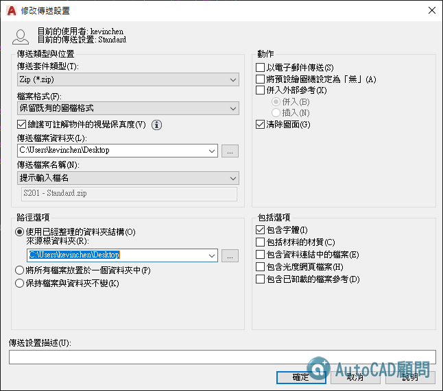

有一個很重要的觀念跟各位分享，圖面是工程進行中最基本的溝通語言，你要確保一件事，就是你在公司內部出圖都是正常，何為正常...就是當使用外部參考可以找的到，出圖筆寬也找的到，寫的文字字型檔也要找的到，如果有自訂的線型檔或剖面線型檔也要找的到~
但是想想，這張圖的所有相關檔案，CTB、外部參考、字型檔、線型檔或剖面線檔，別的公司找的到嗎，當你辛苦畫的完美圖面，在別的公司環境下無法正常顯示與出圖，那不就無法使用圖面與他人溝通了~
所以AutoCAD從2002版本開始加入了 「電子傳送」ETRANSMIT指令，可以把為網際網路傳送建立檔案集組件。傳送組件中的圖檔將自動包括所有相關的從屬檔案 (例如，外部參考與字體檔)。這樣一來你的圖面也能在其他公司正確的顯示所有資訊!


說明：傳送圖檔給某人時，出現的一般問題是忽略了要包括一些相關的從屬檔案 (如外部參考和字體)。在某些情況下，不包括這些檔案會使收件人無法使用這些圖檔。使用電子傳送，從屬檔案將自動包括於傳送組件中，從而降低出現錯誤的可能性。
電子傳送的預設傳送設置，是不會併入外部參考的，所以當圖檔中的外部參考圖層就變成(X-00$0$圖框)，已經變成是B圖檔裡的圖塊(X-00)了，是因為勾選了併入外部參考功能。
依預設傳送設置，他會將外部參考檔和你的圖檔，形成相對路徑模式，通常我在公司的外部參考檔放在一個名為XREFS的資料夾，所以當他壓縮成ZIP時，不管您為傳送組件選取哪個資料夾結構選項，所有從屬檔案的絕對路徑均會轉換為相對路徑或「無路徑」，以確保可以透過圖檔找到從屬檔案。

但是你需要把 繪圖機規劃檔*.pc3、與顏色相關的出圖型式檔*.ctb、字型檔*.shx 等等，放在AutoCAD預設的支援路徑，這樣才可以找的到檔案。
延伸閱讀：詳細說明請參考 AutoCAD的遊戲規則 文章：